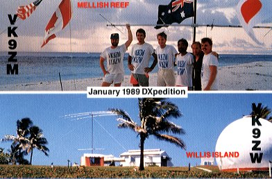

【 Back Issues Apr.2001】 TIME:UTC(JST-09:00) Report from JA1RJU (PM95sq)
30.Apr.2001(15:00k) *VK-TV 01:00- 46.172 -- KH0/JR3TVH 01:27 50.110/115 SSB *ZL-TV 02:30- 45.24/25/26-- *9M-TV 03:30- 48.240/260 -- *BY-TV 03:30- 49.750 -- *ZL-TV 04:00- 50.760 FM TV Audio ZL1VHF 04:30- 50.043 CW Beacon 9M2TO/B 04:30- 50.005 CW Beacon ZL2AGI 05:02 50.110 CW XV3AA 05:46 50.110/140 SSB VK4ASL 06:24 50.110 SSB FK1TK 06:24 50.110 SSB VU2RM 06:29 50.350 SSB/CW QSX 50.355MHz→QRT 07:31z 3D2AG 06:51 50.105 SSB 9M2TO/B 07:40- 50.005 CW Beacon loud! BV2NT 07:35 50.115 SSB VK4BRG 07:40- 50.077 CW Beacon VK4ABP 07:40- 52.347 CW Beacon VU2RM 08:29 50.350 CW again! VK4JH 08:39 50.115 SSB FW5ZL 09:20 50.110/120 CW/SSB TX0C QRM VK6RSX 09:20- 50.304 CW Beacon VK8VF 11:45- 50.057 CW Beacon V73AT 11:48 50.110 CW V73SIX 11:48- 50.014 CW Beacon V63YV 11:50 50.125 CW/SSB P29BPL 12:00- 50.029 CW Beacon 9M6CT 12:15 50.126 SSB YB0CBI 12:56 50.110 SSB HL2KV 12:59 50.115 SSB VR2XMT 12:59 50.115 SSB VR2ZNC 13:00 50.145 SSB VR2LC 13:05 50.100 CW DU1EV 13:30 50.105 CW VR2JK 14:00 50.100 CW V63LJ 14:00 50.140 CW YB0AI 14:35 50.110 SSB VK8AH 14:41 50.110 CW/SSB VQ9IO 14:46 50.104 CW BD7NQ 15:00 50.115 SSB VR2ZGC 15:00 50.160 SSB BG7OH 15:00 50.134 SSB VR2XNG 15:00 50.170 SSB
| ◎ VK4CP・Adamからの情報によると、4月20-24日にMellish ReefからQRVしたVK9MLは、 期間中96時間の運用で4K.BV.DU.FK8.HL.HP.JA.KH6.KH8.KL7.P4.TI.V73.W6.VK.YC.YS.ZLの18 DXCC entitiesとQSOしたと。 |
29.Apr.2001(15:00e)
*VK-TV 02:30- 46.172/240 --
*ZL-TV 04:30- 45.24/25/26--
ZL1VHF 06:00- 50.043 CW Beacon
ZL3TY 06:02 50.110 CW
ZL3SIX 06:05- 50.040 CW Beacon
3D2AG 07:37 50.105 SSB
FK8CA 07:54 50.110 SSB
FK1TK 07:54 50.110/130 SSB
ZL2AAA 07:56 50.110 SSB
VK2QF 08:32 50.110 CW
TX0C 08:40 50.105 CW
VK4BRG 09:00- 50.077 CW Beacon
VK6RSX 12:00- 50.304 CW Beacon
VK8VF 12:00- 50.057 CW Beacon
28.Apr.2001(15:00h)
*VK-TV 02:30- 46.172/240 --
*ZL-TV 02:30- 45.250 --
3D2AG 02:45 50.110 CW
*9M-TV 03:30- 48.240/260 --
9M2TO/B 04:30- 50.005 CW Beacon
9M2/JI1ETU 04:50- 50.085 CW Beacon
VK6RSX 05:00- 50.304 CW Beacon
FK1TK 07:23 50.110 SSB
3D2AG 07:26 50.110 CW
TX0C 08:25 50.130 SSB
VK4ABP 08:45- 50.304 CW Beacon
KH8/N5OLS 08:57 50.110 CW
9M2TO/B 09:00- 50.005 CW Beacon
FW5ZL 09:14 50.106 CW
9M2TO 09:16 50.119 CW
9V1JA 09:20 50.110 CW
JY9NX 09:30 50.093 CW QSX 50.150MHz SC 220deg
HL2WA 09:59 50.110 CW
VK6RSX 13:00- 50.304 CW Beacon
P29BPL 13:00- 50.029 CW Beacon
TX0C 13:20 50.108 CW
27.Apr.2001(15:00g)
*BY-TV 03:00- 49.750 --
*VK-TV 03:00- 46.172/240 --
*ZL-TV 03:00- 45.250 --
TX4A/MM 04:27 50.110 SSB
VK6RSX 04:50- 50.304 CW Beacon
VK4BRG 04:50- 50.077 CW Beacon
VK4CXQ 04:57 50.110 CW
3D2AG 05:04 50.110 CW
FK1TK 06:55 50.110 SSB
3D2ER 07:05 50.110 CW
FK8CA 07:17 50.110 CW
VK4BLK 07:40 50.110 SSB
KH8/N5OLS 08:35 50.110 CW
FW5ZL 08:40 50.110 CW
VK4CH 08:57 50.110 SSB
VK8VF 09:30- 50.057 CW Beacon
VK4RIK 09:30- 52.445 CW Beacon
P29BPL 09:30- 50.029 CW Beacon
DU1EV 12:45 50.110 CW
VK4FNQ 13:03 50.110 SSB CQ LP
DU1/GM4COK 13:11 50.110 CW/SSB
YC1MH 13:50 50.115 SSB
26.Apr.2001(15:00m)
*VK-TV 04:30- 46.172/240 --
*ZL-TV 04:30- 45.24/25/26--
ZL1VHF 04:50 50.043 CW Beacon
VK6RSX 04:50- 50.304 CW Beacon
VK4KK 04:54 50.110 CW
TX4A/MM 05:55 50.115 SSB/CW QTH=RG08. QSL via FK8KAB
FK1TK 06:30 50.110/127 SSB
3D2ER 06:55 50.110 CW QRM TX4A/mm
3D2AG 06:57 50.105 CW
VK4CY 07:00 50.110 SSB
VK4KGP 07:00 50.110 SSB
VK4NW 07:31 50.110 SSB
VK2KST 07:53 50.110/120 SSB
VK6JJ 08:06 50.105 CW
*9M-TV 09:00- 48.240/260 --
VK4ABP 09:04- 52.347 CW Beacon
VK4RIK 09:04- 52.445 CW Beacon
VK4JH 09:09 50.110 CW
9M2TO/B 09:10- 50.005 CW Beacon
VK8VF 12:00- 50.057 CW Beacon
VK6RSX 12:00- 50.304 CW Beacon
P29BPL 12:00- 50.029 CW Beacon
VK4FNQ 12:19 50.110 SSB CQ LP
DU1EV 12:27 50.110 CW
VK4ABW 12:29 50.110 CW CQ SA
YB0CBI 13:20 50.115 SSB
YB2LAB 13:22 50.115/129 SSB
YC1MH 13:35 50.110 SSB
9M2TO/B 13:35- 50.005 CW Beacon
9M2/JI1ETU 13:35- 50.085 CW Beacon
9M2/JI1ETU 13:55 50.120 SSB
DU1EV 14:05 50.110 CW
VQ9NL 14:15 50.111 CW QSL via W4NML
| ◎ 久しぶりに夜間のコンデションが上昇、YC/YB、9M2、VQ9NLなどがFBに入感。 |
25.Apr.2001(15:00e)
*VK-TV 03:30- 46.172/240 --
*ZL-TV 03:30- 45.24/25/26--
VK4APE 04:36 50.110 SSB
VK6RSX 05:00- 50.304 CW Beacon
VK4BRG 05:00- 50.077 CW Beacon
VK4ABW 05:03 50.110 CW
V73SIX 06:26 50.014 CW Beacon
V73E 06:26 50.110/130 SSB
*9M-TV 07:00- 48.240/260 --
V73E 07:13 51.100 FM
VR2XMT 08:16 50.110 SSB
VK4KK 09:09 50.110 CW
VK4ABW 09:11 50.110 SSB
VK4CHQ 09:12 50.110 SSB
VK4RIK 09:20- 52.445 CW Beacon
KH8/N5OLS 09:28 50.110/101 CW/SSB
VK4ZJR 09:33 50.110 SSB
VK4CXQ 09:42 50.110 SSB
VK8VF 13:00- 50.057 CW Beacon
VK8MS 13:10 50.110/115 SSB/CW
24.Apr.2001(15:00g)
*VK-TV 02:30- 46.172/240 --
*ZL-TV 02:30- 45.24/25/26--
VK9ML 02:40 50.106 CW
ZL3TY 03:25 50.110 CW
ZL3NE 03:26 50.110 CW
ZL1VHF 03:26- 50.043 CW Beacon
VK6RSX 04:00- 50.304 CW Beacon
ZL3TY 04:11 50.110/100 CW
V73E 04:24 50.110/150 CW/SSB
V73SIX 04:25- 50.014 CW Beacon
3D2AG 04:42 50.103 CW
ZL3TY 05:21 50.110 CW
*9M-TV 06:00- 48.240/260 --
V73E 06:50 50.110 SSB
FK1TK 07:05 50.110/130 SSB
3D2ER 08:27 50.110 CW
FO5RA 08:30 50.106 CW/SSB
VK4JH 08:49 50.110 CW
VK6RSX 09:20- 50.304 CW Beacon
VK4RIK 09:20- 52.445 CW Beacon
VK4ABP 09:20- 52.347 CW Beacon
VK4BRG 09:20- 50.077 CW Beacon
VK4CP 09:48 50.110 CW
V73AT 13:49 50.110 CW
23.Apr.2001(15:00e)
*VK-TV 05:00- 46.172/240 --
VK4PU 05:30 50.110 SSB
VK4BLK 05:33 50.110 SSB
VK4AFL 06:00 50.110 SSB
3D2AG 06:52 50.110 CW/SSB
VK4CXQ 06:59 50.110 SSB
VK4BLK 07:06 50.110 SSB
VK4JH 07:29 50.110 SSB
VK4FNQ 07:33 50.110 SSB
VK9ML 07:53 50.110 SSB CQ
VK9ML 08:18 50.145 CW
VK4BRG 08:26 50.110 SSB
VK4CH 08:29 50.110 SSB
VK4WDM 08:29 50.110 SSB
| ◎ 午前中はVK/ZLのTVも入感しないほど落ち込んでいたコンデションだったが、 05:00z過ぎからようやくVK4、3D2が入感してきた。 メリッシュ・リーフのVK9MLは相変わらずアクティブにQRVしているが、今日は信号も弱くとぎれとぎれに入感する程度。 |
22.Apr.2001(15:00g)
*VK-TV 01:00- 46.172/240 --
*ZL-TV 01:00- 45.24/25/26--
VK9ML 02:00 50.145 CW
VK4CXQ 06:26 50.110 CW
VK2QF 06:33 50.110 CW
V73SIX 06:40- 50.014 CW Beacon
VK4CP 06:44 50.110 SSB
VK4ZJR 07:11 50.120 SSB
FK1TK 07:13 50.130 SSB
V73E 07:24 50.110/150 SSB
VK4WDM 07:31 50.110 SSB CQ EU
3D2AG 07:33 50.103 CW
DS5ISO 07:43 50.120 CW
VK4CH 07:44 50.110 SSB
KH6SX 07:52 50.110 CW
VK9NS 08:30 50.115 CW
VK3DQJ 08:40 50.110 CW
FW5ZL 08:43 50.120 CW/SSB
VK4BRG 08:45- 50.077 CW Beacon
KH8/N5OLS 09:07 50.101 CW
V73SIX 10:00- 50.014 CW Beacon
VK6RSX 10:00- 50.304 CW Beacon
VK8VF 12:00- 50.057 CW Beacon
VK4APE 12:39 50.110 SSB
VK9ML 12:45 50.110/145 SSB
21.Apr.2001(17:00j)
*VK-TV 03:00- 46.172/240 --
*ZL-TV 03:00- 45.24/25/26--
W1VX/KH4 05:00 50.115 CW QSL via JF1OCQ
V73E 05:30 50.110/150 SSB
V73SIX 05:30- 50.014 CW Beacon
VK4AJS 05:32 50.110 SSB
FK8GX 05:42 50.110 SSB
FK1TK 05:44 50.130 SSB
VR2XMT 06:19 50.115 SSB
VK6AKT 06:25 50.110/170 SSB
VK9ML 06:25 50.145 CW
T88YK 06:29 50.125 SSB/CW QSL via JN1WTK
VK6IP 06:36 50.110/107 CW
VK4KK 06:44 50.110 SSB QSO with H44NC
VK4JSR 06:44 50.110 SSB ↓
VK4ADC 06:45 50.110 SSB
VK4FNQ 06:46 50.110 SSB
VK4PU 06:46 50.110 SSB
VK4ABW 06:50 50.110 SSB
VK4JH 06:51 50.110 SSB
VK6RSX 06:55- 50.304 CW Beacon
VK6RPH 06:55- 50.066 CW Beacon
VK6RBU 06:55- 50.306 CW Beacon
VK4ABP 07:00- 52.347 CW Beacon
VK4BRG 07:00- 50.077 CW Beacon
VK4RGG 07:00- 50.058 CW Beacon
VK6SIX 07:05 50.140 CW
3D2AG 07:10 50.103 CW/SSB Fiji Is.
VK9NS 07:14 50.110 SSB
VK9ML 07:20 50.145 SSB QSX 50.150-160
VK2QF 07:27 50.115 CW
VK4TZL 07:48 50.110 SSB
FK1TK 08:10 50.180 SSB
FK8CA 08:11 50.110 CW CQ AF
EY8MM 08:19 50.110/115 CW 210 dig SC
VR2LC 08:48 50.107 CW
EY8MM 09:05 50.110/115 SSB UP 5
VK8VF 13:00- 50.057 CW Beacon
P29BPL 13:00- 50.029 CW Beacon
VK6RSX 13:00- 50.304 CW Beacon
VK4ABP 13:00- 52.347 CW Beacon
T88CL 13:00 50.120 SSB QSL via JA8CCL
KH2/JI3CEY 13:20 50.106 CW
DU1EV 13:20 50.135 SSB
VQ9NL 14:43 50.115/113 CW QSL via W4NML
BG7OH 15:47 50.135 SSB
VR2XRW 15:49 50.155 SSB
VR2KW 15:49 50.165 SSB
YB5QZ 15:50 50.165 SSB
VR2XMT 15:51 50.190 SSB
VR2XNG 15:52 50.160 SSB
KH2/JI3CEY 16:00 50.130 CW
VQ9NL 16:00 50.112 SSB
VR2ZST 16:10 50.112 SSB
VR2BG 16:12 50.112/100 SSB/CW
VR2LC 16:15 50.110 CW
BA7JG 16:20 50.125 SSB
BD7NI 16:27 50.150 SSB
20.Apr.2001(15:00d)
*VK-TV 02:00- 46.172/240 --
*ZL-TV 02:00- 45.24/25/26--
VK3XQ 04:50 50.110 SSB
VK4AKK 04:51 50.110 SSB
V73E 06:10 50.110 SSB
VK4CXQ 06:18 50.110 CW
VK9ML 06:20 50.110/145 SSB UP 10. QSL via VK4APG
VK6RSX 09:50- 50.304 CW Beacon
VK4BRG 09:50- 50.077 CW Beacon
VK4RIK 09:50- 52.445 CW Beacon
VK8VF 09:50- 50.057 CW Beacon
P29BPL 10:00- 50.029 CW Beacon
VK3DQJ 10:17 50.110 SSB
VK9ML 10:20 50.145 SSB still good
VK4FNQ 10:58 50.110 SSB
VK3EK 12:27 50.110 SSB/CW
|
◎ メリッシュ・リーフ(Mellish Reef)からVK9MLが運用を始めた。 6mでは06:20z(15:20JST)に50.110MHzで入感、QSO開始直後に50.145MHzにQSY、10KHz UPのスプリットでJAのパイルアップを捌いていた。 コンデションは4時間ほど続き、多くの局がQSOに成功した。 運用は4月24日までの予定だが、海抜が僅かに1mの小さな"陸地"のためサイクロン(Cyclones)の発生が予測された時には、 直ちに島を離れると。
 1989年1月にMellish Reefから6mを運用したVK9ZM このPediには日本からJR1RCQ・古坂さんが参加した ◎ 青森県三沢市からアクティブに6mにQRVしていた7J7ACX(Joe Mancuso)は米国本土勤務となり、 カリフォルニア州サンノゼ(San Jose)市に戻った。 現在、サンフランシスコ近郊(GL=CM97)のこの街からKG6JDXのコールサインで6mにQRVしている。 |
19.Apr.2001(15:00h)
*VK-TV 02:00- 46.172/240 --
*ZL-TV 02:00- 45.24/25/26-- weak
FO0CLA/A 04:06 50.110 CW Austral I.
HL1LTC 04:13 50.110 CW
VK4KK 04:14 50.110 CW
VK4CXQ 04:15 50.110 CW
FW5ZL 04:26 50.110 CW
KH6HME/B 04:36- 50.061.5 CW Beacon
V73AT 05:24 50.110 SSB
V73SIX 05:24- 50.0014 CW Beacon
FK8CA 05:26 50.110 CW/SSB
V73E 05:29 50.110/130 SSB QSL via WF5T
ZL1VHF 05:45- 50.043 CW Beacon
VK6RSX 05:45- 50.304 CW Beacon
ZL3NE 05:49 50.110/106 CW
FK8GX 06:01 50.110 CW
FK1TK 06:38 50.110/120 SSB
3D2ER 06:58 50.110 CW
VK4ZJR 07:07 50.110 SSB
VK4CH 07:42 50.110 SSB
P29BPL 08:15- 50.029 CW Beacon
VK4RIK 08:15- 52.445 CW Beacon
VK4ABW 08:57 50.110 SSB
VR2XMT 09:10 50.115 SSB
VK4DO 09:19 50.113 SSB
VK4JH 09:41 50.110/115 CW
VK4FNQ 09:43 50.110 SSB
V73AT 09:44 50.110 SSB
VK8VF 13:00- 50.057 CW Beacon
Report from JA6FRI (PL47ea) 11.Apr-18.Apr
18.Apr.2001(01:00b)
*ZL-TV 23:00- 45.24/25/26--
*VK-TV 23:00- 46.172/240 -- weak
17.Apr.2001(15:00g)
*ZL-TV 23:00- 45.250/260 -- weak
PY2XAT 03:07 50.110 SSB
FO3BM 03:10 50.110 SSB loud !
CE-FM 03:15- 47.900 --
ZP5PT 03:28 50.110 CW/SSB GG14
PY2WC 03:29 50.110 CW
PP1CZ 03:32 50.110 CW
ZP5RPO 03:38 50.130 SSB
PY2PLL 03:41 50.101 CW GG66
FO3BM 03:41 50.110 SSB BH52
ZP5PT 03:47 50.110 SSB Try to FO3, but no Prop.
PY2HN 03:51 50.110 CW GG66
PY2YU 03:53 50.105 CW GG66
*9M-TV 04:00- 48.240/260 --
*BY-TV 04:00- 49.750 --
FO3BM 05:15 50.110 SSB still good!
FW5ZL 07:32 50.110 CW
A45XR 08:48 50.115 CW
HL2WA 09:40 50.110 CW
VQ9NL 15:15 50.110 CW
9M2TO/B 17:50- 50.005 CW Beacon
16.Apr.2001(18:00i)
*ZL-TV 03:00- 45.24/25/26-- weak
*VK-TV 06:00- 46.172 --
*BY-TV 06:00- 49.750 --
FW5ZL 06:03 50.110/140 CW/SSB
3D2ER 07:33 50.110 CW/SSB
VR2XMT 07:39 50.110 SSB
*9M-TV 07:50- 48.240/260 --
*BY-TV 07:50- 49.750 --
VR2LC 08:38 50.110 CW
FW5ZL 08:38 50.110 SSB/CW
BV2DP 08:51 50.120 CW
A45XR 09:18 50.105 CW
(J28NH 09:28 50.110 SSB into PL14-24)
3D2AG/P 09:48 50.110 CW
FR1AN 10:34 50.110 CW
VU2RCR 11:29 50.110 SSB Chandru. good sig.
VU2ZAP 12:05 50.110/360 SSB Raj
V73AT 12:41 50.110 CW CQ
9M2TO/B 12:45- 50.005 CW Beacon
VK6RSX 12:45- 50.304 CW Beacon
YB5QZ 13:19 50.117 CW CQ
VQ9NL 14:10 50.110 SSB QSO with JA4,6,JR6
S79Z 14:36 50.120 CW/SSB CQing
YB5QZ 15:40 50.110 CW CQ
9V1JA 15:49 50.110 CW
VQ9NL 16:14 50.125 SSB QSL via W4NML
S79Z 16:15 50.120 CW/SSB loud ! QSO with JA3's!
9M2TO/B 16:22- 50.005 CW Beacon loud !
15.Apr.2001(17:00k)
*ZL-TV 23:20- 45.24/25/26--
*VK-TV 23:20- 46.172/240 -- weak
KH6SX 03:40 50.100 CW
KH6HME/B 05:15- 50.061.5 CW Beacon
FO3BM 05:21 50.110/130 SSB
VR2XMT 05:43 50.110 SSB QSO with KH6's
(VK9NS 06:03 50.110/115 SSB no sig in PL47)
(3D2ER 06:03 50.120 CW no sig in PL47)
K6MIO/KH6 06:10 50.104 CW
DS5ISO 06:21 50.105 CW
*9M-TV 06:30- 48.240/260 --
*BY-TV 06:30- 49.750 --
VR2XMT 07:00 50.110 SSB
3D2ER 07:03 50.110 CW
KH8/N5OLS 07:04 50.110 CW
FW5ZL 08:07 50.110 CW
9M2TO 08:23 50.131 CW loud !
9M2TO/B 08:24- 50.005 CW Beacon
VR2LC 09:01 50.110 CW
A45XR 09:04 50.113 CW loud ! UP5
VU2ZAP 11:04 50.110/350 SSB/CW
9V1JA 12:46 50.110/105 CW
9M2TO/B 13:20- 50.005 CW Beacon
DU1/GM4COK 14:00 50.110 CW
YB5QZ 14:16 50.110 CW
VQ9JT 14:16 50.110/103 CW
9M2/JI1ETU 14:30- 50.085 CW Beacon
9M2TO/B 15:20- 50.005 CW Beacon
S79Z 16:15 50.110/120 SSB/CW
14.Apr.2001(17:00h)
*ZL-TV 22:30- 45.24/25/26--
*VK-TV 23:00- 46.172/240 --
VK4KK 23:26 50.110 SSB
VK4ABW 23:32 50.110 CW
FO3BM 01:43 50.110 SSB
FO5RA 01:45 50.120/106 CW/SSB QSL via KM5M
V73SIX 02:15- 50.014 CW Beacon
KH6HME/B 02:40- 50.061.5 CW Beacon
KH6SX 03:24 50.110 CW
HL3IUA 03:25 50.110 SSB
FO3BM 03:25 50.110/130 SSB
V73GOD 04:08 50.140 SSB
KH8/N5OLS 04:15 50.110/102 SSB/CW
K6MIO/KH6 04:24 50.110 SSB
VK4CP 04:28 50.125 SSB
V73AT 04:47 50.110 CW/SSB
*9M-TV 05:00- 48.240/260 --
KH8/N5OLS 06:10 50.110 CW
9M2TO/B 06:30- 50.005 CW Beacon
VR2LC 06:45 50.110 CW
VR2XMT 06:51 50.110 SSB
A45XR 07:10 50.110 CW FB sig!
(ET3VSC 07:20 50.120 CW into PL14-PL24)
ET3VSC 07:40 50.120 CW into PL36-
7Z1SJ 09:05 50.110 SSB GL=LL25
FW5ZL 09:15 50.110 CW
ZP5YW 12:29 50.100 CW LP
A45XR 12:45 50.104 CW
S79Z 15:24 50.120 CW/SSB
13.Apr.2001(16:00h)
*EU-TV 00:00- 48.250 --
*CE-FM 00:00- 47.900 --
PY2XB 00:20 50.110 CW
FO5DR 00:43 50.110 CW ex FO8DR
PY2IAX 01:01 50.115 CW
ZP5YW 01:06 50.115 CW
PY2JM 01:15 50.110 CW
KH6SX 01:27 50.110 CW
CE3SAD 01:29 50.126 SSB
V73SIX 01:30- 50.014 CW Beacon
KH6HME 01:30- 50.014 CW Beacon
CE3RR 01:37 50.130 SSB
PY2HDY 01:49 50.105 CW
KH6HI 01:50- 50.066 CW Beacon
WH6O 01:57 50.150 SSB
(ZK1WL 02:03 50.098 CW N.Cook I.)
K6QXY 02:43 50.110 CW SC
KH6SX 02:53 50.105 CW
A35NE 02:55 50.110 SSB weak
VR2LC 03:13 50.110 CW
VR2XMT 03:20 50.110 SSB
PY5HOT 03:20 50.110 SSB
AH7MI 03:20 50.110 CW
PY2PAI 03:24 50.110 CW
ZP5YW 03:28 50.110 CW
KH7L 03:53 50.098 CW
VK4PU 03:57 50.110 CW
KH6IAA 04:15 50.110 CW/SSB
KH2JU 04:20 50.110 SSB
DS5ISO 04:30 50.115 CW
V73GOD 04:37 50.115 SSB
V73AT 04:50 50.110 CW
WH6WI 05:00 50.130 SSB
K6MIO/KH6 05:21 50.110 SSB
*9M-TV 05:30- 48.240/260 --
*HS-TV? 05:30- 48.250 --
*BY-TV 05:30- 49.750 --
3D2ER 05:59 50.110 SSB
VK4JH 07:06 50.110 CW
A45XR 07:16 50.110/106 CW
EY8CQ 07:21 50.110 CW
FW5ZL 08:38 50.110 CW/SSB
HL3IUA 08:43 50.106 CW
3D2AG/P 08:43 50.105/110 CW
KH8/N5OLS 08:45 50.101 CW
A45XR 08:50 50.106 CW CQing loud !
FO3BM 09:22 50.110 SSB
EY8CQ 09:28 50.107 CW
V73AT 10:50 50.115/110 SSB
P29BPL 11:00- 50.029 CW Beacon
VK4APE 11:15 50.110 SSB
4W6UN 11:20- 50.097 CW Beacon
*VK-TV 11:20- 46.172 --
VU2ZAP 11:35 50.115 SSB
DU1/GM4COK 11:45 50.108 CW
VK8MS 11:46 50.100 CW
VK8VF 11:46- 50.057 CW Beacon
V73SIX 11:50- 50.014 CW Beacon
VK6RSX 11:50- 50.304 CW Beacon
VK4RIK 11:50- 52.445 CW Beacon
KA1I/NH2 12:18 50.117 SSB OP & QSL JH7BZR
VK4FNQ 12:20 50.117 SSB
VK4CP 12:55 50.110 SSB
VK4AFL 13:26 50.110 SSB
VK4JH 13:45 50.110 CW
9V1JA 13:47 50.110 CW
S79Z 14:47 50.110/120 SSB/CW loud !
9M2TO/B 15:50- 50.005 CW Beacon
| ◎ 早朝から南米がオープン。久しぶりに入感したNorth Cook I.のZK1WLはJA8から聞こえ出した。 南東方向からのスキャッター気味の信号は西日本になるほど弱く、 ダイレクトでPY、ZP5などの南米やFO5、KH6が強力に入感していた奄美、 沖縄エリアではこの信号はほとんど確認する事が出来なかった。 逆に夕方から入感したA45XR(Oman)、深夜のS79Z(Seychelles)は奄美、沖縄では強力だった。 |
12.Apr.2001(17:00d)
*BY-TV 02:00- 49.750 --
*VK-TV 03:00- 46.172 --
FW5ZL 08:14 50.110 CW
V73SIX 08:20- 50.014 CW Beacon
*9M-TV 09:30- 48.240/260 --
*HS-TV? 09:30- 48.250 --
9M2TO/B 09:35- 50.005 CW Beacon
VK4JH 09:39 50.110 CW
VK6RSX 09:40- 50.304 CW Beacon
VK8VF 09:40- 50.057 CW Beacon
9M2TO/B 17:30- 50.005 CW Beacon
11.Apr.2001(16:00f)
*9M-TV 06:00- 48.240/260 --
*HS-TV? 06:00- 48.250 --
*VK-TV 06:00- 46.172 --
ZS6PJS 07:30 50.110 CW
5R8EE 07:32 50.110 SSB
3D2AG/P 08:34 50.110 SSB
FR1AN 08:35 50.110 SSB
FW5ZL 08:46 50.120 CW
7Z1SJ 11:20 50.110 SSB QSO with JR6's, weak sig into PL47
5R8EE 11:27 50.110/130 SSB
KH8/N5OLS 11:41 50.110 CW
VQ9VK 14:23 50.110/104 CW QSL via N1TO
K7ZX/MM 14:40 50.120 CW QTH GL=NJ94(Nr 9M2)
S79DVL 14:42 50.120 CW/SSB loud! OP.JR3DVL
9V1JA 14:46 50.110 CW
S79KS 15:04 50.120 SSB OP.JA3AQM
Report from JA1RJU (PM95sq)
10.Apr.2001(15:00j)
*VK-TV 22:00- 46.172/240 --
*ZL-TV 22:00- 45.24/25/26-- loud !
*EU-TV? 22:20- 48.250.2 --
*CE-FM 22:40- 47.900 FM Music stn loud !
LU3DCA 22:54 50.110/140 SSB
LU1DMA 22:55 50.145 SSB
LU2FFD 22:58 50.150/110 SSB
LU2EEQ 22:58 50.110 SSB
LU9EHF 23:04 50.115 SSB
CE3SAD 23:14 50.110 SSB
LU1ECZ 23:15 50.125 SSB
*VK-TV 02:00- 46.172/240 --
*9M-TV 02:00- 48.240/260 --
V73SIX 03:00- 50.014 CW Beacon
VK4BLK 03:02 50.110 SSB
VK2BHO 03:12 50.110 SSB
V73UX 03:13 50.110/130 SSB
FK8CA 03:24 50.110 CW
KH6HME/B 03:25- 50.061.5 CW Beacon SC
KH6SX 03:40 50.110 CW SC
KH7L 03:47 50.110 CW SC
9M2TO/B 06:00- 50.005 CW Beacon
V73SIX 06:00- 50.014 CW Beacon
VK4CXQ 06:10 50.110 CW
VK3DQJ 06:18 50.110 CW
VK2CHR 06:40 50.110 SSB
VK2EM 06:43 50.110 SSB
VK2QF 06:47 50.110 CW
VK2YOC 06:49 50.110 SSB
VK4JH 06:52 50.110 CW
VK4BRG 07:00- 50.077 CW Beacon
VK4FNQ 07:05 50.110 SSB
FK8CA 07:32 50.110 CW
FW5ZL 08:05 50.110/120 CW/SSB
AH8A 08:20 50.110/106 SSB
FO5RA 08:25 50.107 CW
KH8/N5OLS 08:46 50.101/120 CW
(5R8EE 08:49 50.115 SSB JA6)
EY8CQ 09:55 50.110/107 CW SC
4W6UN 13:00- 50.097 CW Beacon
P29BPL 13:00- 50.029 CW Beacon
VK8VF 13:00- 50.057 CW Beacon
V73AT 13:05 50.110 CW
|
◎ 早朝の南米の入感に続き、日中はスキャッターによるKH6/KH7が入感。
夕方から"常連"となったFK8、FW5、KH8/AH8、FOなどの南太平洋方面が強力に入感。
久しぶりにAH8Aも聞こえていたがJAとのQSOは"敬遠"？。
◎ 5W1SAのQSLマネジャーのJH7OHF・小野さんからの情報によると、5W1SA・佐久間さんは先週末で一時QRT、 4月末に帰国すると。6月か7月には再度サモアに赴任する予定なので、秋のDXシーズンにはまた強力な信号が聞こえそう。 |
09.Apr.2001(15:00f)
*VK-TV 23:00- 46.172/240 --
*ZL-TV 23:00- 45.24/25/26--
ZL3SIX 23:30- 50.040 CW Beacon
VK8VF 23:30- 50.057 CW Beacon
VK2QF 23:48 50.106 CW
VK8MS 23:51 50.105 CW
ZL2KT 23:58 50.103 SSB
VK4BLK 00:01 50.105 CW
ZL2AGI 00:04 50.120 CW Wkd VE7XF
VK4CXQ 00:08 50.110 CW
FO3BM 00:12 50.110 SSB
P29BPL 00:13- 50.029 CW Beacon
V73SIX 00:13- 50.014 CW Beacon
VK4ABW 00:15 50.106 CW
VK4JH 00:18 50.110 CW
VK4PU 00:26 50.120 SSB Wkd W's
VK4DO 00:27 50.115 SSB
VK4KJL 00:29 50.110 SSB CQ VE7
VK4KK 00:30 50.110 SSB
VK4APG 00:32 50.110 CW
VK3OT 00:34 50.110 SSB
*9M-TV 06:00- 48.240/260 --
9M2TO/B 06:00- 50.005 CW Beacon
VK4JH 08:50 50.110 CW
5B4FL 08:55 50.110 CW SC
KH8/N5OLS 09:07 50.110 CW
FK8CA 09:19 50.110 CW
VK4WDM 09:43 50.110 SSB CQ EU
VK4FNQ 09:44 50.110/130 SSB
3D2AG/P 09:48 50.110 CW
JY9NX 09:57 50.096 CW SC
08.Apr.2001(15:00g)
*VK-TV 01:00- 46.172/240 --
*ZL-TV 01:00- 45.24/25/26--
*CE-FM 01:30- 47.900 -- FM Audio
LU9EHF 01:40 50.110 SSB
LU8MB 01:40 50.116 SSB
CE3RR 01:41 50.125 SSB
CE3SAD 01:42 50.120 SSB
PY2XB 01:47 50.105 CW
LU2FFD 01:49 50.150 SSB
CE0Y/W7XU 02:20 50.106 CW/SSB
*9M-TV 06:00- 48.240/260 --
V73SIX 06:50- 50.014 CW Beacon
9M2TO/B 06:50- 50.005 CW Beacon
VK6RSX 07:00- 50.304 CW Beacon
VK4ABW 07:55 50.110 CW
5B4FL 08:24 50.101 CW SC
VK4CXQ 08:30 50.106 CW
FW5ZL 08:33 50.110/120 CW
3D2AG/P 08:35 50.105 CW
9M2TO 08:53 50.130 CW CQ
KH8/N5OLS 08:58 50.097 CW
VK4WDM 09:06 50.110 SSB CQ EU
VK4JH 09:14 50.110 CW CQ EU
OD5/OK1MU 09:16 50.091 CW
SV1DH 09:50 50.107 CW
JY9NX 09:51 50.096 CW/SSB QSX 50.150
5B4FL 10:05 50.133 CW SC
VK8VF 12:00- 50.057 CW Beacon
VK8AH 12:42 50.110 SSB
|
◎ 午前中の南米の入感に続いて、夕方から南西のスキャッターで、弱い中東・東ヨーロッパが入感。
5B4FL、JY9NX以外は、いずれも信号は微弱で地域差のある入感だった。
09:00z頃から西日本を中心に入感したレバノンのOD5/OK1MUは、6mで初のJA-ODのQSOとなる。
JAではほとんど聞くチャンスはないが、OD5SIXのビーコンが50.078MHz(FSK)で出ている。 JA'sのメンバーによるS7(Seychelles)のDXpediは予定通り4月6日から始まり、すでに沖縄地域からのQSOが伝えられている。 現地からの情報によると、ノイズ(パワーライン？)により受信状態が悪く、かなりの信号強度で入感しないとQSOは難しいとのこと。 いずれにしても現在のコンデションでは"本土"からのQSOはかなり難しい。 |
07.Apr.2001(15:00h)
*VK-TV 00:00- 46.172 -- weak
*ZL-TV 01:00- 45.24/25/26--
CE-FM 01:10- 47.900 -- FM Audio
VK6RSX 04:00- 50.304 CW Beacon
VK5AYD 04:14 50.110 CW
V73SP 04:25 50.110/130 SSB
V73SIX 04:25- 50.014 CW Beacon
VK4WDM 04:25 50.110 SSB CQ EU
VK4ABW 04:29 50.110 CW
VK4BRG 04:30- 50.077 CW Beacon
VK4ABP 04:30- 52.347 CW Beacon
*9M-TV 04:40- 48.240/260 --
VK4APE 06:04 50.110 SSB
FK1TK 06:31 50.110 SSB
VK4WDM 07:45 50.110 SSB
VK4BKM/M 08:26 50.110 SSB
VK4RGG 08:27- 50.057 CW Beacon
VK4ABP 08:27- 52.347 CW Beacon
VK4KK 08:30 50.110 CW
FW5ZL 09:00 50.120 SSB
3D2AG/P 09:00 50.105 CW/SSB
KH8/N5OLS 09:00 50.100 CW
VK4YPM 09:15 50.110 SSB
K6MIO/KH6 09:15 50.110 SSB SC
VK4BRG 09:30- 50.077 CW Beacon
VK4JH 09:53 50.110 CW
JY9NX 10:30 50.093 CW SC UP5
06.Apr.2001(15:00h)
*VK-TV 00:00- 46.172/240 --
*ZL-TV 00:00- 45.250 --
VK6RSX 04:30- 50.304 CW Beacon
VK8RAS 04:30- 50.047 CW Beacon
*9M-TV 05:00- 48.240/260 --
VK4JH 05:10 50.110 CW/SSB
FW5ZL 07:20 50.110 CW QSL via JA3EMU
KH8/N5OLS 07:30 50.110/115 SSB/CW
FK1TK 07:54 50.110 SSB
3D2AG/P 08:40 50.110/115 CW/SSB
H40RW 08:55 50.110 CW
VK4ZJR 09:09 50.110/120 SSB
VK4WDM 09:09 50.110 SSB
VK8VF 09:15- 50.057 CW Beacon
VK4ABP 09:15- 52.347 CW Beacon
VK4BRG 09:15- 50.077 CW Beacon
V73SIX 09:15- 50.014 CW Beacon
VK8RAS 09:15- 50.047 CW Beacon
FW5ZL 09:20 50.120 SSB
4W6UN 12:15- 50.097 CW Beacon
P29BPL 12:15- 50.029 CW Beacon
VK6RSX 12:15- 50.304 CW Beacon
VK4RIK 12:15- 52.445 CW Beacon
YB0A 12:55 50.125 SSB
VK4CXQ 13:04 50.110 CW
DU1EV 13:12 50.110 SSB
05.Apr.2001(15:00i)
*VK-TV 04:00- 46.172/240 --
*ZL-TV 04:00- 45.24/25/26--
VK6RSX 04:50- 50.304 CW Beacon
*9M-TV 05:00- 48.240/260 --
VK8RAS 05:40- 50.047 CW Beacon
9M2TO/B 06:30- 50.005 CW Beacon
VK6RPH 07:00- 50.066 CW Beacon
VK6RBU 07:00- 50.306 CW Beacon
VK6AOM 07:07 50.110 SSB
VK6UMG 07:15 50.110 SSB
VK6JJ 07:18 50.106/110 CW
VK4CV 07:35 50.110 SSB CQ EU
VK2BA 07:40 50.110 SSB
3D2ER 07:49 50.110 CW
VK4KK 07:50 50.110 SSB
FK8HA 08:00 50.091 RTTY
FK1TK 08:08 50.110/200 SSB
KH8/N5OLS 08:12 50.110 CW
FW5ZL 08:29 50.110 SSB
VK4TZL 08:34 50.110 SSB
VK8ZAA 08:54 50.110 SSB
P29BPL 12:50- 50.029 CW Beacon
VK8VF 12:50- 50.057 CW Beacon
VK4ABP 12:50- 52.347 CW Beacon
VK4RIK 12:50- 52.445 CW Beacon
VK6RSX 12:50- 50.304 CW Beacon
VK8RAS 12:50- 50.047 CW Beacon
VK4SWR 13:13 50.110 SSB
VK4CXQ 13:16 50.110 CW
04.Apr.2001(15:00h)
*VK-TV 00:00- 46.172/240 --
*ZL-TV 00:00- 45.24/25/26-- weak
VK6RSX 03:15- 50.304 CW Beacon
VK6RSX 07:15- 50.304 CW Beacon
*ZL-TV 07:30- 45.24/25/26--
FW5ZL 08:05 50.110 SSB
ZL1VHF 08:50- 50.043 CW Beacon
3D2ER 08:55 50.110/115 CW/SSB
KH8/N5OLS 08:55 50.103 CW/SSB
FK1TK 08:58 50.130 SSB
3D2AG/P 09:06 50.107 CW/SSB
FW5ZL 09:30 50.115 CW
P29BPL 12:00- 50.029 CW Beacon
VK8VF 12:00- 50.057 CW Beacon
VK4ABP 12:00- 52.347 CW Beacon
VK4RIK 12:00- 52.445 CW Beacon
VK6RSX 12:00- 50.304 CW Beacon
KH8/N5OLS 12:35 50.102 CW
VK9KXP 13:02 50.110 CW/SSB QSL SP9EVP
9V1JA 13:34 50.105/130 CW/SSB
DU1EV 14:29 50.145 SSB
03.Apr.2001(15:00j)
*VK-TV 00:00- 46.172/240 --
*ZL-TV 00:00- 45.24/25/26-- weak
VK8MS 00:10 50.110 CW
VK4KK 00:10 50.110 SSB
VK8VF 00:10- 50.057 CW Beacon
VK8RAS 01:00- 50.047 CW Beacon
VK4BRG 01:00- 50.077 CW Beacon
VK3DQJ 06:30 50.110 SSB
FK8CA 07:58 50.110 CW
FK8HA 08:10 50.091 RTTY
FW5ZL 08:31 50.120/125 CW
3D2AG/P 08:42 50.105/110 SSB
FK1TK 08:46 50.120 SSB
VK4FNQ 08:48 50.110 SSB
VK4BRG 08:50- 50.077 CW Beacon
VK6RSX 08:50- 50.304 CW Beacon
3D2TC 08:55 50.115 SSB
3D2ER 08:55 50.110 CW/SSB
VK4TZL 09:34 50.110 SSB
P29BPL 10:20- 50.029 CW Beacon
P29PL 10:20 50.110 SSB
VK8VF 11:20- 50.057 CW Beacon
V73SIX 11:50- 50.014 CW Beacon
V73AT 11:50 50.102 CW
VK1VP 11:50 50.110/137 SSB
VK2APG 12:07 50.110/145 SSB
VK2FLR 12:30 50.110 SSB/CW
VK2YHY 12:37 50.110 SSB
VK4CP 12:39 50.110 SSB
9M6BAA 12:39 50.105 CW/SSB
VK4KK 13:13 50.110/115 SSB
4W6UN 13:15- 50.097 CW Beacon
VK4ABP 13:15- 52.347 CW Beacon
VK4RIK 13:15- 52.445 CW Beacon
VK4AFL 14:00 50.110 SSB
DU1/GM4COK 14:00 50.105 CW
02.Apr.2001(15:00i)
*VK-TV 01:00- 46.172/240 --
*ZL-TV 01:00- 45.24/25/26-- weak
FK8CA 01:30 50.110 CW
VK4AHW 01:33 50.110/145 SSB
FK8CA 01:59 50.099 RTTY
FK8HA 02:20 50.091 RTTY
*9M-TV 06:00- 48.240/260 --
9M2TO/B 06:00- 50.005 CW Beacon
FR1AN 06:09 50.110 SSB/CW
VK6RSX 06:30- 50.304 CW Beacon
VK4CXQ 06:54 50.110 CW
FR1AN 06:55 50.120 SSB Strong
FK1TK 08:00 50.120 SSB
VK4WTN 08:24 50.110 SSB
FK8HA 08:35 50.091 RTTY Name Patrice
VK4CV 08:46 50.103 CW
VK8RAS 08:50- 50.047 CW Beacon
VK4BRG 08:50- 50.077 CW Beacon
VK4JH 09:10 50.110 CW
VK8VF 12:00- 50.057 CW Beacon
VK4ABP 12:00- 52.347 CW Beacon
VK4CP 12:11 50.110 SSB
VK4KK 12:31 50.110 CW
VK6RSX 13:50- 50.304 CW Beacon
DU1/GM4COK 13:59 50.110 CW
DU1EV 14:00 50.125 SSB
|
◎ 昨日同様、南太平洋方面のオープンの後、レユニオン(Reunion I.)のFR1ANが強力に入感していた。
この時期は夕方のインド洋方面からの電波も東日本まで伸びてくるので要注意。 最近は50.110MHz付近でヨーロッパやロングパスの南米狙いで"CQ DX"を出しているVK'sが増えたが、 この局を間髪を入れずに呼んでいるJA局が相変わらず多い。 "CQ"が聞こえたからといってすぐ"飛びつく"のではなく、良くワッチしてから呼ぶように心がけたいもの。 |
01.Apr.2001(16:00j)
*BY-TV 00:00- 49.750 --
*VK-TV 00:00- 46.172/240 --
*9M-TV 03:00- 48.240/260 --
9M2TO/B 03:10- 50.005 CW Beacon
VK4PU 03:24 50.110 CW
VK8RAS 03:30- 50.047 CW Beacon
VK4RGG 03:30- 50.057 CW Beacon
VK4BRG 03:30- 50.077 CW Beacon
VK4AHW 03:42 50.110/145 SSB
VK4CXQ 04:46 50.110 CW
VK4JH 04:50 50.110/150 CW/SSB
VK4FNQ 05:07 50.110/115 SSB
VK4ABW 05:08 50.110 50.120 SSB
FO3BM 08:20 50.135 SSB
9M6BAA 08:43 50.110/106 CW
VK4CXQ 08:57 50.110 CW
VK4KK 09:39 50.110 CW
JY9NX 09:45 50.110/106 CW SC. UP 2
FK8VHM 09:55 50.106 CW
VK8VF 13:30- 50.057 CW Beacon
VK6RSX 13:30- 50.304 CW Beacon
VK4ABW 13:48 50.110 CW/SSB
VK8MS 14:07 50.110 SSB
DU1/GM4COK 14:45 50.110 CW/SSB
VR2XMT 14:46 50.110 SSB
9M6BAA 14:53 50.130 SSB
BV4QI 15:28 50.110 SSB
| ◎ 昨日は完全に"死んで"いた6mバンドのコンデションも、今日は朝から49.750MHzのBY-TVがEsシーズン並みに強力に入感。 午後からVK'sとFO'sの入感でコンデションは回復、夕方には久しぶりにFR1AN(Reunion I.)が強力に入感してきた。 |